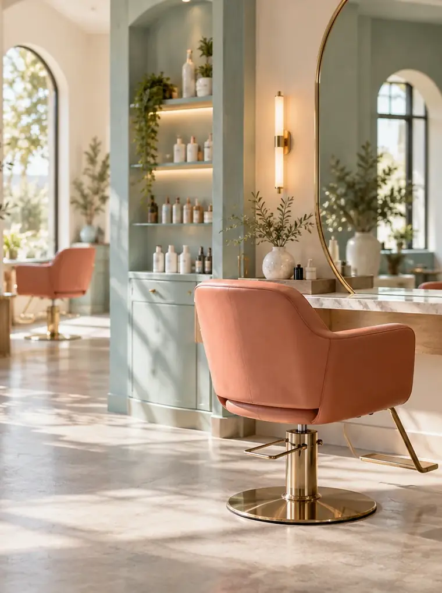

hair salon minamo ／ 風見坂
乾かすだけで、水面のツヤ。
風見坂の住宅街にある、3席だけの美容室です（架空）。カット・カラー・ツヤ髪トリートメントを、仕上がりと所要時間を先にお伝えしてから始めます。
- はじめての方
- カウンセリング +15分・無料
- カットの目安
- 約60分・5,500円
- キャンセル
- 前日19時までにお電話で

first visit
はじめての日も、仕上がりと時間を先に。
予約から仕上げまで、3つの段階で進みます。カットの場合、はじめての日は合計で約75分。終わりの時間が分かっていれば、お迎えや次の予定も組みやすくなります。
- 来店まで
予約する
メニューを選ぶと、所要時間と料金が先に表示されます。迷ったら「カット」だけで予約して、当日のご相談で決めても大丈夫です。
- 0:00 – 0:15
カウンセリング
普段の乾かし方や、朝にかけられる時間をうかがいます。仕上がりの形・所要時間・料金をこの時点でお伝えし、納得してから始めます。
- 1:00 – 1:15
仕上げと、乾かし方
最後は、ご自宅で再現できる乾かし方を一緒に確かめます。ドライヤーの向きと順番だけの、短い説明です。
menu
まず見てほしい、3つのメニュー
線の長さが所要時間です。料金はすべて税込。いずれも見本用の架空価格です。
カットシャンプー・ブロー込み
約60分5,500円
カット＋カラー色の相談・シャンプー・ブロー込み
約120分11,000円〜
ツヤ髪トリートメント単品でも、ほかのメニューに足しても
約30分4,400円

our way
まとまる髪は、毎朝の5分をくれる。
ミナモが大切にしているのは、サロンを出た翌朝のことです。ツヤは、毛先の向きがそろうと生まれる光。だから仕上げの形よりも先に、ご自宅で乾かしたときにまとまる切り方を考えます。
- 乾かす向きまで決めて切るつむじや生えぐせを見て、ドライヤーを当てる方向が一つに決まるように形をつくります。
- 時間のかかる提案はしない朝に使える時間をうかがい、その中で続けられるお手入れだけをお伝えします。
the room
3席だけの、明るい部屋
大きな窓から入る光で、色の仕上がりを自然光に近い明るさで確かめられます。席どうしの間を広く取り、隣を気にせず話せるようにしています。

- 席の数
- 3席・すべて窓側
- 個室
- なし（席の間を広く）
- お子さま連れ
- ベビーカーのまま入店可
hours & access
駅から4分、住宅街の角を曲がって
| 営業時間 | 10:00 – 19:00 最終受付 17:30 |
|---|---|
| 定休日 | 火曜・第3水曜 |
| 場所 | 架空県風見坂 1-4-7 風見坂駅 南口から徒歩4分 |
| お支払い | 現金・クレジットカード |
営業時間・住所などはすべて見本上の設定です。
道順とよくある質問を見る予約は、空いている時間を選ぶだけ。
メニューを選ぶと、終わりの時間まで表示されます。はじめての方は、そのまま「はじめて」を選んでください。
予約する（見本）- はじめての方は、カウンセリングに15分（無料）
- 所要時間は、予約の画面でメニューごとに表示
- キャンセル・変更は前日19時までにお電話で
いずれも見本上の設定です。実際の制作では、事業者が使う予約サービスへつなぎます。